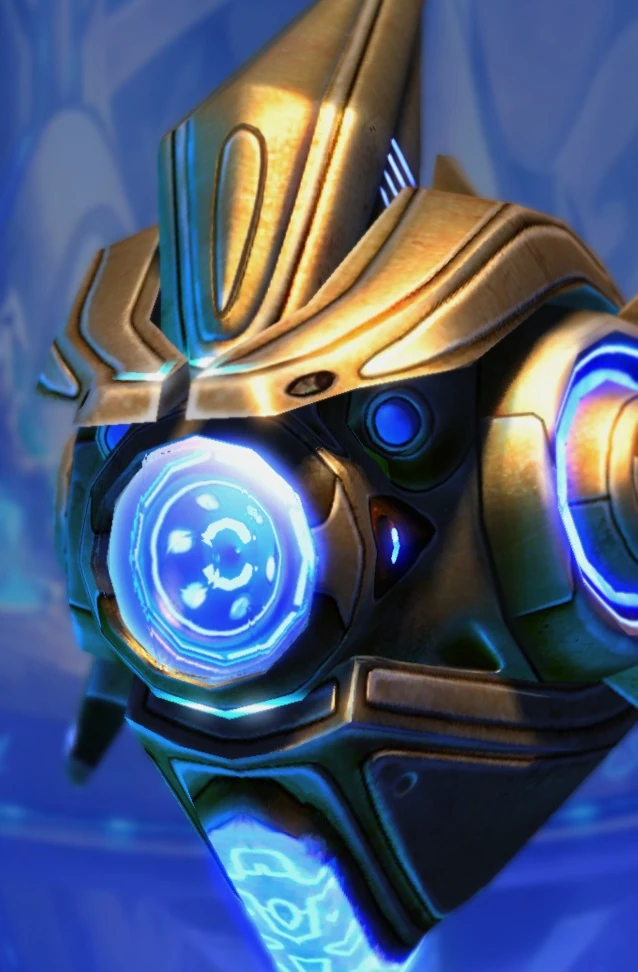

Зонд
| Зонд | |
|  | |
| Информация о юните | |
| Тип: | Маленькая наземная единица |
| Описание: | Базовая рабочая единица. Может собирать ресурсы и строить здания протоссов. |
| Построен из: | Нексус |
| Стоимость: |  50 50  50 50  12 12  1 1 |
| Горячие клавиши: | E |
| Атака: Луч частиц | |
| Цели: | Наземные |
| Урон | 5 |
| DPS: | 4.67 |
| Перезарядка: | 1.07 |
| Радиус атаки: | 0.1 |
| Статистика юнита | |
| Защита: |  20 20  20 20  0 (+1) 0 (+1) |
| Атрибуты: | Легкий Механический |
| Радиус обзора: | 8 |
| Скорость: | 3.94 |
| Занимаемое место в транспорте: | 1 |
Обзор
Зонд сохраняет свою роль рабочей единицы протоссов в StarCraft II без каких-либо заметных изменений в функциях. Однако, поскольку щиты протоссов восстанавливаются быстрее, чем раньше, зонды стали более универсальными разведчиками, чем в оригинальных играх.
Зонд — это рабочая единица протоссов, деформированная в Нексусе. Он собирает ресурсы, имеет маломощную рукопашную атаку и может телепортироваться в любое здание протоссов. Все постройки протоссов, кроме пилона, нексуса и ассимилятора, должны быть построены в пределах диапазона мощности ближайшего пилона или варп-призмы. В отличие от своих коллег-терранов и зергов, зонду не нужно оставаться на месте, чтобы продолжать работу над зданием, в которое он перемещается, вместо этого он может выполнять другие задачи, такие как преобразование в большее количество зданий или возвращение для сбора ресурсов.
Регенерирующий плазменный щит Зонда также отличает Зонд от КСМ и Дрона. Особенно на ранних стадиях игры щиты играют очень большую роль в разведывательных и беспокоящих способностях Зонда, так как опытный игрок может достаточно хорошо избегать преследования юнитов (таких как зерглинги или морские пехотинцы), что любое повреждение щитов будет незаметным. быстро восстанавливается. Другими распространенными способами использования, вытекающими из этих атрибутов, являются отсрочка размещения инкубатория или нерестового пула и создание SCV.